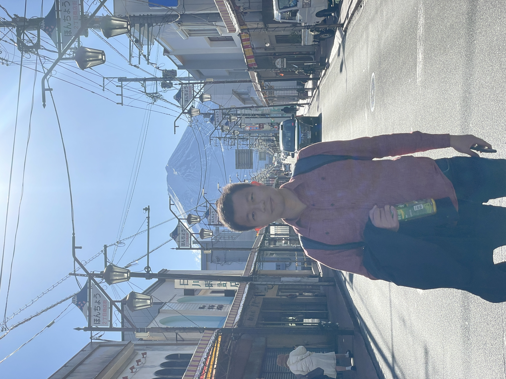

About Me

I’m a postdoctoral researcher at Northwestern CIERA, studying low-mass stars, brown dwarfs, and exoplanets. I am working with Jason Wang. My thesis advisor is Adam Burgasser.
Here is my complete CV (updated 2023 January 5).
I study ultracool dwarfs (UCDs) and exoplanets using, using both medium- and high-resolution near-infrared spectroscopy. UCDs (low-mass stars and brown dwarfs) are ubiquitous and long-lived, longer than the age of our universe, which are excellent tracers for our Milky Way's formation history and evolution. I study their motions in space and rotation as a population to understand their formation and evolution, and identify UCD binaries using the RV method.
I am also studying exoplanets using the Keck Planet Imager and Characterizer (KPIC), which is designed to obtain diffraction limited, high-resolution near-infrared spectra for directly-imaged gas-giant exoplanets using adaptive optics. I am studying their surface temperature and gravity, spins, and abundances, hoping to understand them at the population level.
Originally from Taiwan, I got my B.S. in Physics at National Tsing Hua University (NTHU) in 2014 and was a former member of NTHU's astronomy club. I moved to San Diego as a Physics graduate student at UC San Diego in 2016. I am a postdoctoral researcher at CIERA of Northwestern University since 2022 September. When I am free, I like to classical, US-/Mando-/J-pop, R&B, karaoke, coffee, and tennis. I was a big fan of NBA.
Education:
 Physics PhD, UC San Diego
Physics PhD, UC San Diego
 B.S. Physics, National Tsing Hua University, Taiwan
B.S. Physics, National Tsing Hua University, Taiwan
Research Interests:
lowest-mass stars, brown dwarfs, exoplanets;
medium-/high-resolution spectroscopy, stellar kinematics, very low-mass binaries, stellar rotation